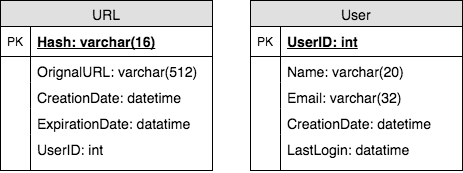

Designing a URL Shortening Service like TinyURL
Let's design a URL shortening service like TinyURL: generating short, unique aliases for long URLs, then redirecting users back to the originals at scale.
In this lesson
Why do we need URL shortening?
URL shortening is used to create shorter aliases for long URLs. Users are redirected to the original URL when they hit these aliases. A shorter version of any URL would save a lot of space whenever we use it e.g., when printing or tweeting as tweets have a character limit.
For example, if we shorten this page through TinyURL:
https://www.educative.io/collection/page/5668639101419520/5649050225344512/5668600916475904/
We would get:
The shortened URL is nearly 1/3rd of the size of the actual URL.
URL shortening is used for optimizing links across devices, tracking individual links to analyze audience and campaign performance, and hiding affiliated original URLs, etc.
If you haven't used tinyurl.com before, please try creating a new shortened URL and spend some time going through different options their service offers. This will help you a lot in understanding this chapter better.
Requirements and Goals of the System
Our URL shortener system should meet the following requirements:
Functional Requirements:
- Given a URL, our service should generate a shorter and unique alias of it.
- When users access a shorter URL, our service should redirect them to the original link.
- Users should optionally be able to pick a custom alias for their URL.
- Links will expire after a specific timespan automatically; users should also be able to specify expiration time.
Non-Functional Requirements:
- The system should be highly available. This is required because if our service is down, all the URL redirections will start failing.
- URL redirection should happen in real-time with minimum latency.
- Shortened links should not be guessable (not predictable).
Extended Requirements:
- Analytics, e.g., how many times a redirection happened?
- Our service should also be accessible through REST APIs by other services.
Capacity Estimation and Constraints
Our system would be read-heavy; there would be lots of redirection requests compared to new URL shortenings. Let's assume 100:1 ratio between read and write.
Traffic estimates: If we assume that we would have 500M new URLs shortenings per month, we can expect (100 * 500M => 50B) redirections during the same time. What would be Queries Per Second (QPS) for our system?
New URLs shortenings per second:
500 million / (30 days * 24 hours * 3600 seconds) ~= 200 URLs/s
URLs redirections per second:
50 billion / (30 days * 24 hours * 3600 sec) ~= 19K/s
Storage estimates: Since we expect to have 500M new URLs every month and if we would be keeping these objects for five years; total number of objects we will be storing would be 30 billion.
500 million * 5 years * 12 months = 30 billion
Let's assume that each object we are storing can be of 500 bytes (just a ballpark, we will dig into it later); we would need 15TB of total storage:
30 billion * 500 bytes = 15 TB
The original lesson had an interactive widget here; shown above as static content.
Bandwidth estimates: For write requests, since every second we expect 200 new URLs, total incoming data for our service would be 100KB per second.
200 * 500 bytes = 100 KB/s
For read requests, since every second we expect ~19K URLs redirections, total outgoing data for our service would be 9MB per second.
19K * 500 bytes ~= 9 MB/s
Memory estimates: If we want to cache some of the hot URLs that are frequently accessed, how much memory would we need to store them? If we follow the 80-20 rule, meaning 20% of URLs generating 80% of traffic, we would like to cache these 20% hot URLs.
Since we have 19K requests per second, we would be getting 1.7billion requests per day.
19K * 3600 seconds * 24 hours ~= 1.7 billion
To cache 20% of these requests, we would need 170GB of memory.
0.2 * 1.7 billion * 500 bytes ~= 170GB
High level estimates: Assuming 500 million new URLs per month and 100:1 read:write ratio, following is the summary of the high level estimates for our service:
| New URLs | 200/s |
| URL redirections | 19K/s |
| Incoming data | 100KB/s |
| Outgoing data | 9MB/s |
| Storage for 5 years | 15TB |
| Memory for cache | 170GB |
System APIs
We can have SOAP or REST APIs to expose the functionality of our service. Following could be the definitions of the APIs for creating and deleting URLs:
createURL(api_dev_key, original_url, custom_alias=None, user_name=None, expire_date=None)Parameters:
api_dev_key (string): The API developer key of a registered account. This will be used to, among other things, throttle users based on their allocated quota.
original_url (string): Original URL to be shortened.
custom_alias (string): Optional custom key for the URL.
user_name (string): Optional user name to be used in encoding.
expire_date (string): Optional expiration date for the shortened URL.
Returns: (string)
A successful insertion returns the shortened URL, otherwise, returns an error code.
deleteURL(api_dev_key, url_key)Where "url_key" is a string representing the shortened URL to be retrieved. A successful deletion returns 'URL Removed'.
How do we detect and prevent abuse? For instance, any service can put us out of business by consuming all our keys in the current design. To prevent abuse, we can limit users through their api_dev_key, how many URL they can create or access in a certain time.
Database Design
A few observations about nature of the data we are going to store:
- We need to store billions of records.
- Each object we are going to store is small (less than 1K).
- There are no relationships between records, except if we want to store which user created what URL.
- Our service is read-heavy.
Database Schema:
We would need two tables, one for storing information about the URL mappings and the other for users' data.

What kind of database should we use? Since we are likely going to store billions of rows and we don't need to use relationships between objects – a NoSQL key-value store like Dynamo or Cassandra is a better choice, which would also be easier to scale. Please see SQL vs NoSQL for more details. If we choose NoSQL, we cannot store UserID in the URL table (as there are no foreign keys in NoSQL), for that we would need a third table which will store the mapping between URL and the user.
Basic System Design and Algorithm
The problem we are solving here is to generate a short and unique key for the given URL. In the above-mentioned example, the shortened URL we got was: "http://tinyurl.com/jlg8zpc", the last six characters of this URL is the short key we want to generate. We'll explore two solutions here:
a. Encoding actual URL
We can compute a unique hash (e.g., MD5 or SHA256, etc.) of the given URL. The hash can then be encoded for displaying. This encoding could be base36 ([a-z ,0-9]) or base62 ([A-Z, a-z, 0-9]) and if we add '-' and '.', we can use base64 encoding. A reasonable question would be; what should be the length of the short key? 6, 8 or 10 characters?
Using base64 encoding, a 6 letter long key would result in 64^6 ~= 68.7 billion possible strings
Using base64 encoding, an 8 letter long key would result in 64^8 ~= 281 trillion possible strings
With 68.7B unique strings, let's assume for our system six letters keys would suffice.
If we use the MD5 algorithm as our hash function, it'll produce a 128-bit hash value. After base64 encoding we'll get a string having more than 20 characters, how will we chose our key then? We can take the first 6 (or 8) letters for the key. This could result in key duplication though, upon which we can choose some other characters out of the encoding string or swap some characters.
What are different issues with our solution? We have the following couple of problems with our encoding scheme:
- If multiple users enter the same URL, they can get the same shortened URL, which is not acceptable.
- What if parts of the URL are URL-encoded? e.g., http://www.educative.io/distributed.php?id=design, and http://www.educative.io/distributed.php%3Fid%3Ddesign are identical except for the URL encoding.
Workaround for the issues: We can append an increasing sequence number to each input URL to make it unique and then generate a hash of it. We don't need to store this sequence number in the databases, though. Possible problems with this approach could be how big this sequence number would be, can it overflow? Appending an increasing sequence number will impact the performance of the service too.
Another solution could be, to append user id (which should be unique) to the input URL. However, if the user has not signed in, we can ask the user to choose a uniqueness key. Even after this if we have a conflict, we have to keep generating a key until we get a unique one.
b. Generating keys offline
We can have a standalone Key Generation Service (KGS) that generates random six letter strings beforehand and stores them in a database (let's call it key-DB). Whenever we want to shorten a URL, we will just take one of the already generated keys and use it. This approach will make things quite simple and fast since we will not be encoding the URL or worrying about duplications or collisions. KGS will make sure all the keys inserted in key-DB are unique.
Can concurrency cause problems? As soon as a key is used, it should be marked in the database so that it doesn't get used again. If there are multiple servers reading keys concurrently, we might get a scenario where two or more servers try to read the same key from the database. How can we solve this concurrency problem?
Servers can use KGS to read/mark keys in the database. KGS can use two tables to store keys, one for keys that are not used yet and one for all the used keys. As soon as KGS gives keys to one of the servers, it can move them to the used keys table. KGS can always keep some keys in memory so that whenever a server needs them, it can quickly provide them. For simplicity, as soon as KGS loads some keys in memory, it can move them to used keys table. This way we can make sure each server gets unique keys. If KGS dies before assigning all the loaded keys to some server, we will be wasting those keys, which we can ignore given a huge number of keys we have. KGS also has to make sure not to give the same key to multiple servers. For that, it must synchronize (or get a lock to) the data structure holding the keys before removing keys from it and giving them to a server.
What would be the key-DB size? With base64 encoding, we can generate 68.7B unique six letters keys. If we need one byte to store one alpha-numeric character, we can store all these keys in:
6 (characters per key) * 68.7B (unique keys) => 412 GB.
Isn't KGS the single point of failure? Yes, it is. To solve this, we can have a standby replica of KGS, and whenever the primary server dies, it can take over to generate and provide keys.
Can each app server cache some keys from key-DB? Yes, this can surely speed things up. Although in this case, if the application server dies before consuming all the keys, we will end up losing those keys. This could be acceptable since we have 68B unique six letters keys.
How would we perform a key lookup? We can look up the key in our database or key-value store to get the full URL. If it's present, issue a "HTTP 302 Redirect" status back to the browser, passing the stored URL in the "Location" field of the request. If that key is not present in our system, issue a "HTTP 404 Not Found" status, or redirect the user back to the homepage.
Should we impose size limits on custom aliases? Since our service supports custom aliases, users can pick any 'key' they like, but providing a custom alias is not mandatory. However, it is reasonable (and often desirable) to impose a size limit on a custom alias, so that we have a consistent URL database. Let's assume users can specify maximum 16 characters long customer key (as reflected in the above database schema).
Data Partitioning and Replication
To scale out our DB, we need to partition it so that it can store information about billions of URL. We need to come up with a partitioning scheme that would divide and store our data to different DB servers.
a. Range Based Partitioning: We can store URLs in separate partitions based on the first letter of the URL or the hash key. Hence we save all the URLs starting with letter 'A' in one partition and those that start with letter 'B' into another partition and so on. This approach is called range based partitioning. We can even combine certain less frequently occurring letters into one database partition. We should come up with this partitioning scheme statically so that we can always store/find a file in a predictable manner.
The main problem with this approach is that it can lead to unbalanced servers, for instance; if we decide to put all URLs starting with letter 'E' into a DB partition, but later we realize that we have too many URLs that start with letter 'E', which we can't fit into one DB partition.
b. Hash-Based Partitioning: In this scheme, we take a hash of the object we are storing, and based on this hash we figure out the DB partition to which this object should go. In our case, we can take the hash of the 'key' or the actual URL to determine the partition to store the file. Our hashing function will randomly distribute URLs into different partitions, e.g., our hashing function can always map any key to a number between [1…256], and this number would represent the partition to store our object.
This approach can still lead to overloaded partitions, which can be solved by using Consistent Hashing.
Cache
We can cache URLs that are frequently accessed. We can use some off-the-shelf solution like Memcache, that can store full URLs with their respective hashes. The application servers, before hitting backend storage, can quickly check if the cache has desired URL.
How much cache should we have? We can start with 20% of daily traffic and based on clients' usage pattern we can adjust how many cache servers we need. As estimated above we need 170GB memory to cache 20% of daily traffic since a modern day server can have 256GB memory, we can easily fit all the cache into one machine, or we can choose to use a couple of smaller servers to store all these hot URLs.
Which cache eviction policy would best fit our needs? When the cache is full, and we want to replace a link with a newer/hotter URL, how would we choose? Least Recently Used (LRU) can be a reasonable policy for our system. Under this policy, we discard the least recently used URL first. We can use a Linked Hash Map or a similar data structure to store our URLs and Hashes, which will also keep track of which URLs are accessed recently.
To further increase the efficiency, we can replicate our caching servers to distribute load between them.
How can each cache replica be updated? Whenever there is a cache miss, our servers would be hitting backend database. Whenever this happens, we can update the cache and pass the new entry to all the cache replicas. Each replica can update their cache by adding the new entry. If a replica already has that entry, it can simply ignore it.
Load Balancer (LB)
We can add Load balancing layer at three places in our system:
- Between Clients and Application servers
- Between Application Servers and database servers
- Between Application Servers and Cache servers
Initially, a simple Round Robin approach can be adopted; that distributes incoming requests equally among backend servers. This LB is simple to implement and does not introduce any overhead. Another benefit of this approach is if a server is dead, LB will take it out of the rotation and will stop sending any traffic to it. A problem with Round Robin LB is, it won't take server load into consideration. If a server is overloaded or slow, the LB will not stop sending new requests to that server. To handle this, a more intelligent LB solution can be placed that periodically queries backend server about its load and adjusts traffic based on that.
Purging or DB cleanup
Should entries stick around forever or should they be purged? If a user-specified expiration time is reached, what should happen to the link? If we chose to actively search for expired links to remove them, it would put a lot of pressure on our database. We can slowly remove expired links and do a lazy cleanup too. Our service will make sure that only expired links will be deleted, although some expired links can live longer but will never be returned to users.
- Whenever a user tries to access an expired link, we can delete the link and return an error to the user.
- A separate Cleanup service can run periodically to remove expired links from our storage and cache. This service should be very lightweight and can be scheduled to run only when the user traffic is expected to be low.
- We can have a default expiration time for each link, e.g., two years.
- After removing an expired link, we can put the key back in the key-DB to be reused.
- Should we remove links that haven't been visited in some length of time, say six months? This could be tricky. Since storage is getting cheap, we can decide to keep links forever.
Telemetry
How many times a short URL has been used, what were user locations, etc.? How would we store these statistics? If it is part of a DB row that gets updated on each view, what will happen when a popular URL is slammed with a large number of concurrent requests?
We can have statistics about the country of the visitor, date and time of access, web page that refers the click, browser or platform from where the page was accessed and more.
Security and Permissions
Can users create private URLs or allow a particular set of users to access a URL?
We can store permission level (public/private) with each URL in the database. We can also create a separate table to store UserIDs that have permission to see a specific URL. If a user does not have permission and try to access a URL, we can send an error (HTTP 401) back. Given that, we are storing our data in a NoSQL wide-column database like Cassandra, the key for the table storing permissions would be the 'Hash' (or the KGS generated 'key'), and the columns will store the UserIDs of those users that have permissions to see the URL.
Deeper analysis: trade-offs & failure modes
The whole design collapses into one decision: how do you mint a short, unique key on the write path without two servers ever handing out the same one? Everything else — the database, the cache, the redirect — is downstream of that choice. Three families exist, and they fail in different ways.
Key-generation approaches
| Approach | How it works | Collision risk | Coordination cost | Predictability |
|---|---|---|---|---|
| Hash + truncate (e.g. MD5/SHA → base62, keep first 6–8 chars) | Hash the long URL, encode, slice to length | Real. Truncating destroys the hash's uniqueness guarantee; birthday collisions at ~62n/2. Must read-before-write or retry-on-conflict on every insert | None for the hash itself, but the collision check is an extra DB round-trip per write | Same URL → same key (good for idempotency, bad — leaks that two requests are the same) |
| Counter + base62 | A global monotonic counter; base62-encode the integer | Zero by construction | High. A single counter is a global serialization point — the classic write bottleneck | Sequential keys are guessable (enumeration attack); also leaks total volume |
| KGS pre-generation (Key Generation Service) | Offline job pre-computes all 6-char base62 keys into a "used/unused" store; app servers grab keys in blocks | Zero — keys are unique by enumeration and marked used atomically | Amortized away. Servers fetch e.g. 1,000 keys at a time, so the KGS is hit once per 1,000 writes, not once per write | Keys come from a shuffled pool, so non-sequential |
pop() from a server's pre-fetched chunk. Trade-off: keys handed to a server that then crashes are lost — acceptable, since 56.8B+ keys (626 ≈ 56.8 billion) is a vast space. Run two KGS replicas with separate key ranges so it is not itself a SPOF.301 vs 302 — the analytics decision
Caching — the 80/20 rule & eviction
Reads dominate massively (a write-once, read-many workload; ratios of 100:1 are typical). Per the Pareto observation, ~20% of URLs generate ~80% of the traffic, so you cache aggressively. If you serve ~20K redirects/sec and the daily read volume is, say, ~1.7B/day, caching 20% of one day's hot set keeps the working set in memory at a few hundred GB — spread across a Redis/Memcached fleet. On a cache miss: read from DB, then populate the cache. Eviction: LRU fits naturally because the hot set drifts (a viral link is hot for hours then cold). Replicate cache nodes so a single node loss doesn't stampede the DB.
Why a NoSQL / key-value store fits
GET key → long_url — a single-key lookup with no relational joins and no multi-row transactions. That is exactly the shape a key-value / wide-column store (DynamoDB, Cassandra) is built for: it gives horizontal scale via consistent hashing, high write throughput, and tunable availability without the overhead of a relational engine you'd never use. A SQL DB works at small scale but the b-tree index and ACID machinery buy you nothing here while limiting horizontal scale. Shard by the hash key itself for even distribution.Rate limiting & abuse
Shorteners are a phishing and spam magnet — the short link hides the destination. Defenses: per-IP / per-API-key rate limits (token bucket) on the create endpoint to stop bulk minting; scan target URLs against malware/phishing blocklists (e.g. Google Safe Browsing) at creation and on redirect; and a takedown/blocklist path so a flagged key returns an interstitial warning instead of redirecting. Rate limiting also protects the KGS block allocator from exhaustion attacks.
Scaling to billions
6-char base62 = ~56.8B keys; bump to 7 chars for ~3.5T if you'll exhaust it. Stateless app servers behind a load balancer scale horizontally. The DB shards by key. Old/expired links are reaped by a lazy cleanup (delete on access if expired) plus a periodic sweep, and their keys are returned to the KGS pool for reuse rather than wasted.
Principal-level mastery check
- Can you explain how a KGS hands out unique keys to many app servers without any coordination on the hot path — and what happens to the block of keys held by a server that crashes?
- Why does 302 (temporary) get chosen over 301 (permanent) when click analytics matter, and what exactly do you lose with each choice?
- Can you do the cache-sizing math: given a read:write ratio and a daily read volume, why does caching ~20% of URLs capture ~80% of traffic, and why is LRU the right eviction policy here?
- Why is a single global counter a write-path bottleneck, and how does block-based key allocation from a KGS eliminate it while keeping keys unique?
- Why does a key-value / wide-column store fit this workload better than a relational DB — which relational features would you literally never use?
- Can you describe two abuse vectors specific to a shortener (phishing, bulk minting) and the concrete defenses (Safe Browsing checks, token-bucket rate limits, takedown interstitials)?
- Why are hash-and-truncate keys collision-prone despite the hash being unique, and what extra cost does the collision check add to every write?